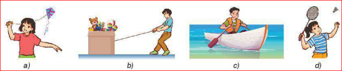
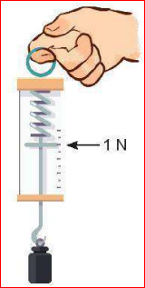
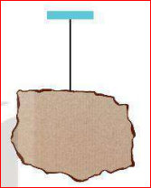
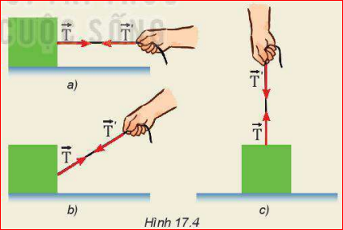
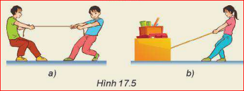
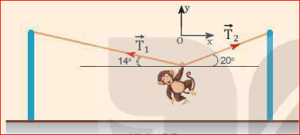

Lời dẫn: Các tình huống ở Hình 17.1 liên quan đến những loại lực nào? Thảo luận tình huống: Tại sao khi được buông ra, các vật quanh ta đều rơi xuống đất?

Định nghĩa: Trọng lực là lực hấp dẫn do Trái Đất tác dụng lên vật gây ra cho vật gia tốc rơi tự do. Trọng lực được kí hiệu là vectơ \(\vec{P}\).
Ở gần Trái Đất trọng lực có:
Công thức của trọng lực:
Áp dụng định luật 2 Newton vào trường hợp vật rơi tự do: \(\vec{P} = m.\vec{g}\)
Định nghĩa: Độ lớn của trọng lực tác dụng lên một vật gọi là trọng lượng của vật.
Công thức tính trọng lượng: \(P = m.g\)
Trọng lượng của một vật có thể đo bằng lực kế hoặc cân lò xo (Hình 17.2).

Lực kế trong Hình 17.2 đang chỉ ở vạch 1 N.
a) Tính trọng lượng và khối lượng của vật bằng lực kế. Lấy \(g \approx 9.8 \text{ m/s}^2\).
b) Biểu diễn các lực tác dụng lên vật (xem vật là chất điểm).
Lời giải:
a) Trọng lượng của vật chính là số chỉ của lực kế: \(P = 1 \text{ N}\).
Khối lượng của vật là: \(m = \frac{P}{g} = \frac{1}{9.8} \approx 0.102 \text{ kg}\) (hay \(102 \text{ g}\)).
b) Các lực tác dụng lên vật gồm: Trọng lực \(\vec{P}\) hướng thẳng đứng xuống dưới và lực đàn hồi của lò xo lực kế \(\vec{F}_{đh}\) hướng thẳng đứng lên trên. Hai lực này cân bằng nhau nên có độ dài biểu diễn bằng nhau.
Lưu ý quan trọng:
| Đặc điểm | Trọng lượng (\(P\)) | Khối lượng (\(m\)) |
|---|---|---|
| Bản chất | Độ lớn của lực hút Trái Đất | Số đo lượng chất tạo nên vật |
| Tính biến thiên | Thay đổi theo vị trí (phụ thuộc \(g\)) | Không thay đổi ở mọi nơi |
Chuẩn bị: một số tấm bìa các-tông phẳng, mỏng; dây treo; thước thẳng; bút chì; kéo.
Thí nghiệm 1: Hãy xác định trọng tâm của tấm bìa các-tông ở Hình 17.3 và giải thích rõ cách làm.
Thí nghiệm 2: Cắt một số tấm bìa hình tròn, hình vuông, tam giác đều. Kiểm chứng kết luận: "Trọng tâm của các vật phẳng, mỏng và có dạng hình học đối xứng nằm ở tâm đối xứng của vật".

Hướng dẫn:
- Bước 1: Đục 2 lỗ nhỏ ở 2 vị trí bất kì trên mép tấm bìa.
- Bước 2: Treo tấm bìa bằng dây qua lỗ thứ nhất. Khi bìa đứng yên, dùng thước và bút chì vạch 1 đường thẳng dọc theo phương của sợi dây treo.
- Bước 3: Lặp lại thao tác với lỗ thứ hai để được đường thẳng thứ hai.
- Kết luận: Giao điểm của 2 đường thẳng vừa vẽ chính là trọng tâm của tấm bìa.
Đo trọng lượng của một vật ở một địa điểm trên Trái Đất có gia tốc rơi tự do là \(9.80 \text{ m/s}^2\), ta được \(P = 9.80 \text{ N}\). Nếu đem vật này tới một địa điểm khác có gia tốc rơi tự do \(9.78 \text{ m/s}^2\) thì khối lượng và trọng lượng của nó đo được là bao nhiêu?
Lời giải:
- Khối lượng của vật không đổi ở mọi nơi: \(m = \frac{P_1}{g_1} = \frac{9.80}{9.80} = 1 \text{ kg}\).
- Trọng lượng của vật tại nơi có \(g_2 = 9.78 \text{ m/s}^2\) là: \(P_2 = m.g_2 = 1 \times 9.78 = 9.78 \text{ N}\).
Khi dùng hai tay kéo dãn một sợi dây cao su, ta thấy dây cao su cũng kéo trở lại hai tay. Khi một sợi dây bị kéo thì ở tại mọi điểm trên dây, kể cả hai đầu dây xuất hiện lực để chống lại sự kéo, lực này gọi là lực căng, kí hiệu là \(\vec{T}\).
Đặc điểm của lực căng dây (\(\vec{T}\)):
1. Dựa vào Hình 17.4, hãy thảo luận và phân tích để làm sáng tỏ: Những vật nào chịu lực căng của dây? Lực căng có phương, chiều thế nào?
2. Hãy chỉ ra điểm đặt, phương, chiều của lực căng trong Hình 17.5a và 17.5b.


Hướng dẫn:
1. Cả bàn tay và khối hộp (vật bị buộc vào dây) đều chịu tác dụng của lực căng dây. Lực căng kéo các vật về phía giữa sợi dây dọc theo phương sợi dây để chống lại sự giãn.
2. Tương tự, tại điểm buộc vào các bạn nhỏ hoặc khối gỗ, lực căng có điểm đặt tại vật, phương trùng phương sợi dây, chiều hướng về phía giữa sợi dây.
Bài 1: Một bóng đèn có khối lượng \(500\text{ g}\) được treo thẳng đứng vào trần nhà bằng một sợi dây và đang ở trạng thái cân bằng.
Bài 2: Một con khỉ biểu diễn xiếc dùng tay nắm vào dây để đứng yên treo mình như Hình 17.7. Cho biết trong hai lực căng xuất hiện trên dây \(\vec{T}_1\) (góc 14°) và \(\vec{T}_2\) (góc 20°), lực nào có độ lớn lớn hơn? Tại sao?

Lời giải Bài 1:
a) Có 2 lực tác dụng lên đèn: Trọng lực \(\vec{P}\) hướng xuống và Lực căng dây \(\vec{T}\) hướng lên.
b) Bóng đèn cân bằng nên: \(T = P = m.g = 0.5 \times 9.8 = 4.9 \text{ N}\).
c) Vì \(T = 4.9 \text{ N} < 5.5 \text{ N}\) (lực căng giới hạn) nên dây không bị đứt.
Lời giải Bài 2:
Theo điều kiện cân bằng của chất điểm, chiếu lên trục Ox ngang: \(T_1.\cos(14^\circ) = T_2.\cos(20^\circ)\).
Vì \(\cos(14^\circ) > \cos(20^\circ)\) nên suy ra \(T_1 < T_2\). Vậy lực căng \(\vec{T}_2\) có độ lớn lớn hơn.
Bài 1:
Một thùng hàng có trọng lượng \(P = 490 \text{ N}\) ở nơi có \(g = 9.8 \text{ m/s}^2\). Tính khối lượng của thùng hàng. Nếu đem thùng hàng này lên Mặt Trăng (nơi có gia tốc trọng trường bằng \(\frac{1}{6}\) gia tốc trọng trường Trái Đất) thì khối lượng và trọng lượng của nó là bao nhiêu?
Lời giải:
- Khối lượng thùng hàng: \(m = \frac{P}{g} = \frac{490}{9.8} = 50 \text{ kg}\).
- Khối lượng là đại lượng không đổi nên trên Mặt Trăng, khối lượng vẫn là \(50 \text{ kg}\).
- Trọng lượng trên Mặt Trăng: \(P' = m.g_{MT} = 50 \times \frac{9.8}{6} \approx 81.67 \text{ N}\).
Bài 2:
Một quả cầu sắt khối lượng \(2.5 \text{ kg}\) được treo vào một sợi dây mảnh và cân bằng tĩnh. Lấy \(g = 10 \text{ m/s}^2\). Tính lực căng của sợi dây lúc này. Nếu lực căng giới hạn của dây là \(20 \text{ N}\), dây có bị đứt không?
Lời giải:
- Quả cầu cân bằng chịu tác dụng của 2 lực: Trọng lực \(\vec{P}\) và lực căng dây \(\vec{T}\).
- Ta có: \(T = P = m.g = 2.5 \times 10 = 25 \text{ N}\).
- Lực căng thực tế dây phải chịu là \(25 \text{ N}\), lớn hơn lực căng giới hạn của dây (\(20 \text{ N}\)). Suy ra sợi dây sẽ bị đứt.
Bài 3:
Hai người cùng kéo một vật bằng 2 sợi dây theo hai hướng khác nhau hợp với nhau một góc 60 độ. Giả sử mỗi người kéo bằng một lực có độ lớn như nhau là \(T = 100 \text{ N}\). Tính độ lớn hợp lực căng tác dụng lên vật do hai sợi dây gây ra.
Lời giải:
- Áp dụng quy tắc hình bình hành cho 2 lực căng dây \(\vec{T}_1, \vec{T}_2\) cùng độ lớn \(T = 100 \text{ N}\), góc \(\alpha = 60^\circ\).
- Hợp lực căng: \(T_{hl} = 2.T.\cos(\frac{\alpha}{2}) = 2 \times 100 \times \cos(30^\circ) = 200 \times \frac{\sqrt{3}}{2} = 100\sqrt{3} \approx 173.2 \text{ N}\).